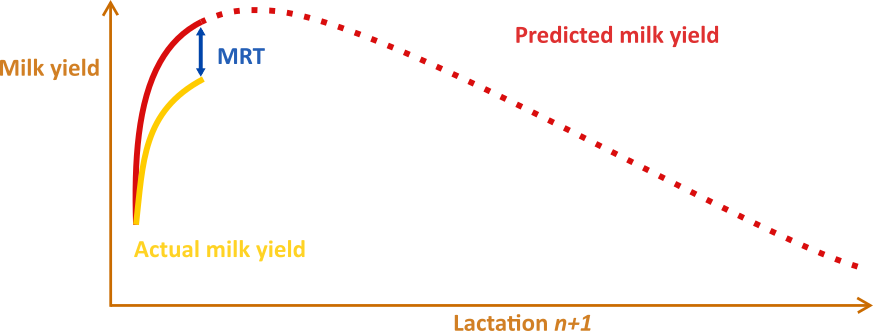

Who am I
I am Matthieu Salamone, and I hold an MSc in Veterinary Medicine, which I completed in 2018. Subsequently, in 2019, I embarked on a joint PhD program, combining Engineering Technology from KU Leuven under the supervision of prof. dr. ir Ben Aernouts & dr. ir. Ines Adriaens and Veterinary Science from Ghent University under the supervision of ass. prof. dr. Miel Hostens & prof. dr. Geert Opsomer. During my PhD, I have been responsible for developing and validating one of the prediction models as part of the VLAIO-LA RESILIENCE project. Beyond my contributions to the RESILIENCE project, my diverse background in data science, veterinary medicine, and comprehensive knowledge of the dairy industry, have enabled me to engage in collaborative efforts to analyze various veterinary data types. These include data related to Semen and udder health (Kemel et al. 2022, Adriaens et al.2023). I am currently in the process of finishing up my Phd aiming to defend it autumn 2023.
Projects
VLAIO-LA RESILIENCE
In dairy cattle, the transition period is defined as three weeks before and three weeks after calving.This timeframe is considered one of the most challenging periods of the lactation for a high-producing dairy cow. During the transition period 30 to 50 % of cows develop metabolic or infectious diseases. The aim of this project was to use Machine Learning (ML) modeling methods to develop a new Key Performance Indicator (KPI) which reflects the transition success of a cow. Over the course of 4 years, we developed models that utilize historical data from the previous lactation and a set of cow-/herd-specific data to predict the production in the next lactation’s transition period (Liseune et al., 2021; Salamone et al., 2022). The difference between both models lies in the type of input data. The nextMILK model, developed by Salamone et al. (2022), uses low-frequency (4-6 week interval) test-day milk yield to predict milk production. In contrast, the SLMYP model of Liseune et al. (2021) relies on high-frequency milk meter data (daily interval) to predict milk yield.

In the second phase of the project potential KPI was constructed in the form of residuals in the transition period (MRT). The MRT is calculated by subtracting the realized milk yield during the transition period from a prediction of healthy milk yield.

In a longitudinal study conducted at the ILVO research facility, cow-level data was used to assess the associations between MRT and transition success. The results from this study revealed significant links between MRT and dry matter intake, health status and the lipogenic mobilization process via non-esterified fatty acids, insulin, and glucose (Salamone et al. 2023). A survey was also conducted at the herd level, the data from 34 farms is still under investigation to identify the link between MRT and management practices.